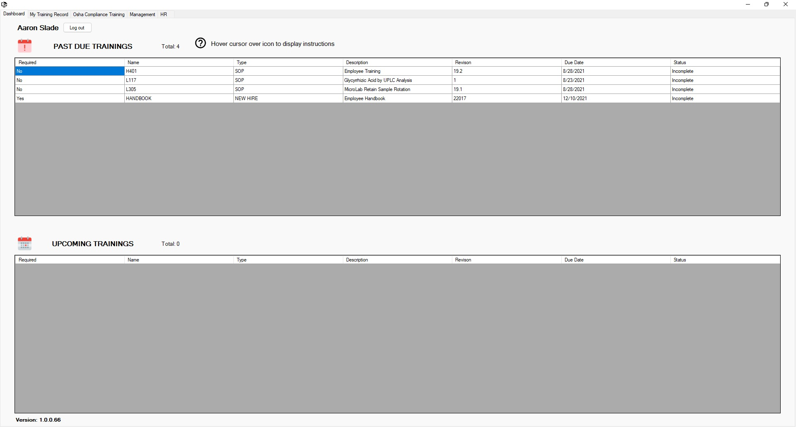

Return to Main Menu
Employee Dashboard
The Employee Dashboard page can be accessed by navigating to the Dashboard tab.
The Employee Dashboard page is the home page of the uLearn Application.
On this page, you can view the trainings currently assigned to you that are past their due date or are due in the near future.
This page is where you will go to view trainings and take training quizzes.

Instructions:
Using the Dashboard:
-
The dashboard has two tables. The "Past Due Trainings" table shows trainings assigned to you that have not been completed and are
past their due dates.
The "Upcoming Trainings" table shows the trainings assigned to you that must be completed in the near future.
-
In each table you can see information about the trainings: whether they are required, their due date, name, description, and type.
You can order the trainings in each table by any of these categories by clicking the category header in the first row of the table.
-
You can view the training documents/videos by double clicking on the row of the table for the training that you wish to view.
Then press the "View Training" button.
NOTE: Once a row is double clicked a popup will appear.
Sometimes this popup will appear on a different monitor if you are using multiple monitors.
-
To take the quiz for a listed training: double click the row of the table for the training that you wish to complete.
Press the "Take Quiz" button.
-
To logout of the uLearn application: press the "Log out" button next to your name in the top left corner of the page.
Information:
-
The version of the uLearn application that you are using is displayed in the bottom left corner of the screen.